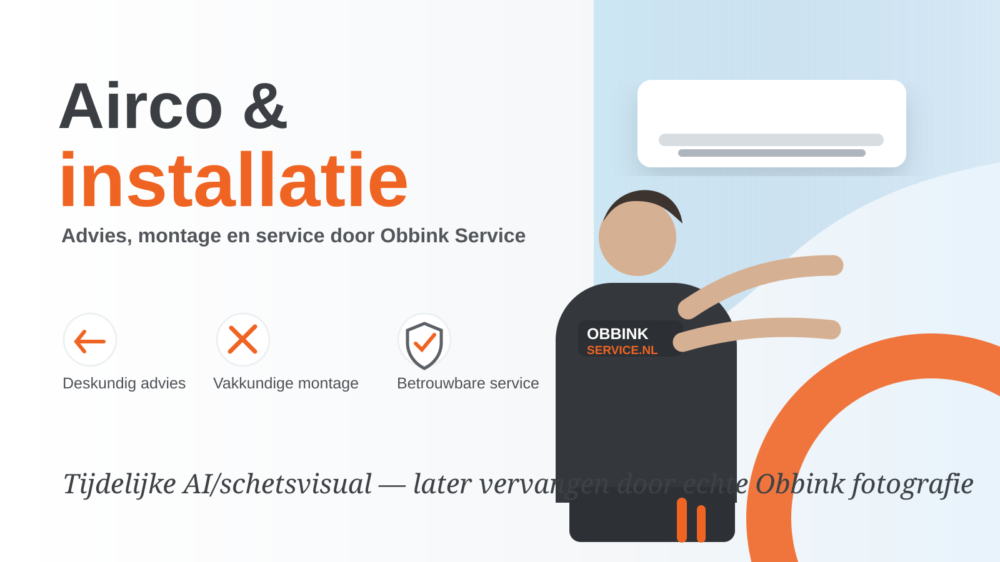

Service • Installatie • Advies
Techniek die werkt.
Service die blijft.
Obbink Service helpt thuis en zakelijk met reparatie, installatie, airco, wifi, energieopslag, professioneel witgoed en beeld & geluid. Van eerste advies tot oplevering en service.

Meer dan reparatie
Waar kunnen wij u mee helpen?
Obbink Service is de technische voordeur voor oplossingen die verder gaan dan alleen een product verkopen. Kies een onderwerp en ontdek wat we voor u kunnen doen.
Airco & installatie
Koelen én verwarmen, passend advies, montage, onderhoud en service.
Binnenkort met echte Obbink fotografie
Wifi, energie, professional & meer
We bouwen de site nu met tijdelijke visuals. Later vervangen we die één-op-één door foto's van jullie eigen monteurs, servicebussen en installaties.

Service en winkel slim verbonden
Advies bij Obbink Service. Prijs en voorraad bij Obbink.
Op onze oplossingspagina’s tonen we relevante producten en modellen. Voor actuele prijzen, voorraad en direct bestellen gaat u door naar de Obbink-webshop. Zo blijft er één plek waar commerciële productinformatie actueel is.
Reparatie & service
Een goede reparatie begint met de juiste informatie.
Het nieuwe serviceformulier wordt slim opgebouwd. De klant kiest eerst apparaat en merk. Daarna vragen we alleen de gegevens die relevant zijn. Bij Bosch en Siemens bijvoorbeeld E-Nr. en FD-nummer, inclusief de mogelijkheid een foto van het typeplaatje te uploaden.
Geen lange lijst met irrelevante vragen.
Zo kunnen we de aanvraag beter voorbereiden.
Later gekoppeld aan FieldBuddy, VENDIT en Business Central.
Slimme service-intake
Vertel ons wat er aan de hand is.
Dit is nu nog een prototype van de voorkant. We gebruiken het om de klantreis en de benodigde gegevens goed te krijgen voordat we de koppelingen met de backoffice maken.
Dan vragen we bijvoorbeeld om E-Nr. en FD-nummer. Daarmee kunnen we het exacte apparaat beter identificeren. Een foto van het typeplaatje mag ook.
Obbink Zakelijk
Eén ingang voor bedrijven, organisaties en zorginstellingen.
Zakelijke aanvragen worden gericht uitgevraagd op organisatie, locatie, contactpersoon, type aanvraag en dienst. Daarmee kunnen we later automatisch naar de juiste medewerker of servicegroep routeren.
Zakelijke aanvraag starten- Zorginstelling → Miele Professional → storing
- Bedrijf → wifi/netwerk → offerte
- Horeca → beeld & geluid → projectadvies
- Organisatie → airco → opname en installatie
Obbink Service
De technische kracht achter Obbink.
De nieuwe website maakt zichtbaar wat achter de schermen al gebeurt: technische kennis, eigen service, professionele installatie en oplossingen die verder gaan dan alleen een apparaat verkopen.